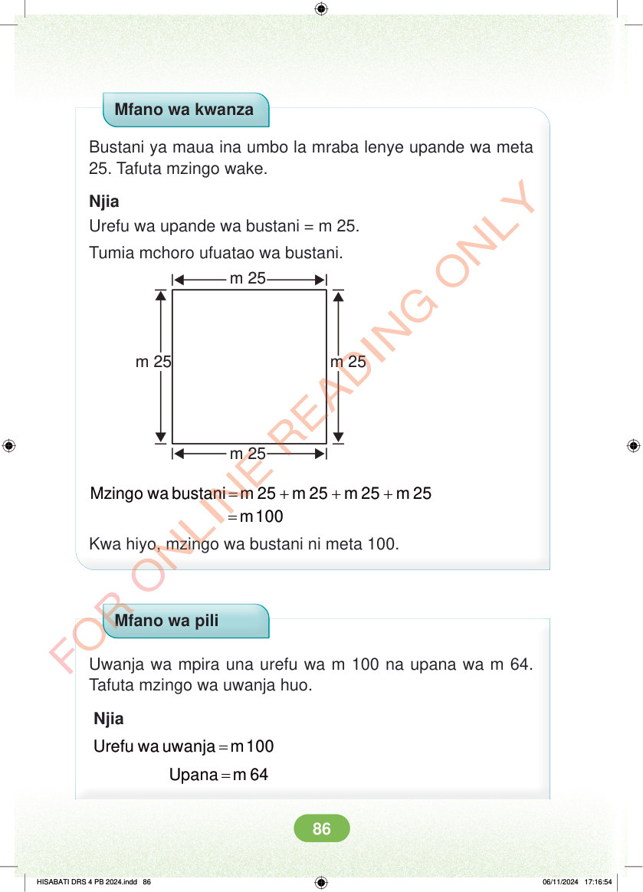

Mfano wa kwanza Bustani ya maua ina umbo la mraba lenye upande wa meta 25. Tafuta mzingo wake. Njia Urefu wa upande wa bustani = m 25. Tumia mchoro ufuatao wa bustani. m 25 m 25 m 25 m 25 = + + + = Mzingo wa bustani m 25 m 25 m 25 m 25 m 100 Kwa hiyo, mzingo wa bustani ni meta 100. Mfano wa pili Uwanja wa mpira una urefu wa m 100 na upana wa m 64. Tafuta mzingo wa uwanja huo. Njia = Urefu wa uwanja m 100 = Upana m 64 HISABATI DRS 4 PB 2024.indd 86 HISABATI DRS 4 PB 2024.indd 86 06/11/2024 17:16:54 06/11/2024 17:16:54